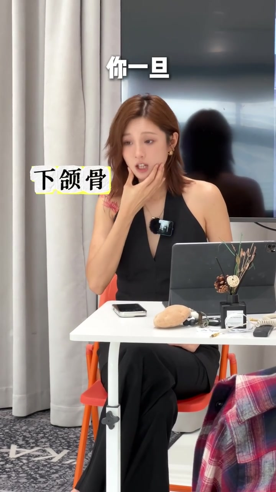
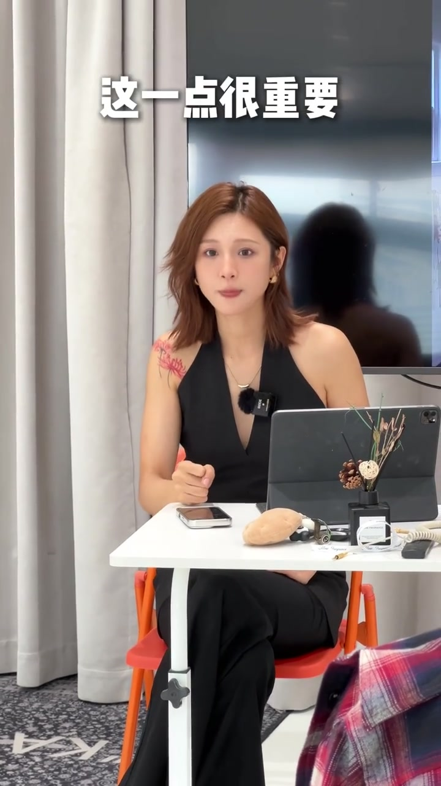
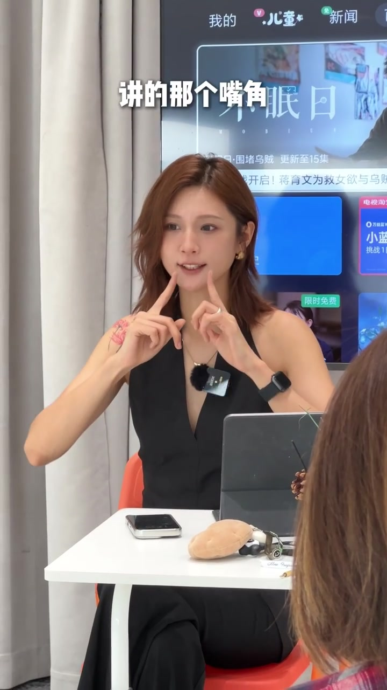

内容要点
[00:00] 重点说一下微章
[00:01] 有的人的微章是这样做的
[00:05] 有点呆对不对
[00:06] 为什么会很呆
[00:07] 你一旦下河谷沉下来
[00:10] 它就很像你在流口水上
[00:13] 然后你这一块就会变得很松
[00:16] 微章这个表情
[00:18] 章的不是下河谷这一点很重要
[00:22] 而是最纯的分开
[00:24] 那我下河谷应该怎么做
[00:25] 就老老实实的
[00:27] 你的两个牙齿
[00:28] 就并在一起就行了
[00:30] 但是你别使劲咬
[00:31] 它俩碰在一起就行了
[00:33] 然后嘴唇这个地方先闭笼
[00:36] 戳一口气
[00:37] 把这个嘴唇闭笼的状态给吹开
[00:41] 这个时候你的嘴唇里会有一条很微弱的缝
[00:44] 吹开了之后有人嘴角下挂
[00:46] 哎呀我这个嘴唇不管你放松
[00:47] 是个嘴角下挂的
[00:49] 在这个基础上
[00:50] 然后再去
[00:53] 我们今天早上讲笑容的时候
[00:54] 讲的那个嘴角
[00:55] 哎哎哎这个力量
[00:56] 你再去控制这个地方
[00:57] 去修饰你的嘴角下挂
[00:59] 那么微张就变成了
[01:03] 而不是
[01:06] 你拉开就难看


